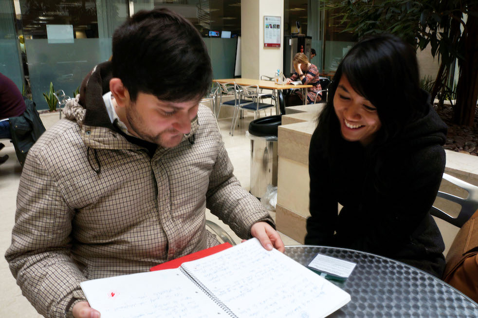

Research
Given the open ended scope, we quickly narrowed our focus to building a tool for creative writers. We felt that since we too were in a creative discipline, we could potentially apply insights to our own field.
The research strategy was an extended version of the extreme users method. On one end, we recruited amateur creative writers with limited experience (i.e. National Writing Month) and on the other, established professionals: including poets, screenwriters, creative writing professors, and editors. Since writing is very much an internal process, we used directed storying (or take me though the process of your most recent work) to evoke what they actually did, minimizing the risk that they'd discuss their ideal process and not their actual one. We asked to look at their artifacts, be it in paper or digital formats. We also put ourselves, non-writers with little interest, through a 6-week creative workshop to get the far extreme.
There was also competitive analysis of existing tools, as well as secondary research that just focused on creativity in general, just to build out our knowledge on the topic.

I led research including directed storytelling with a writer and his writing notebook.
We eventually incorporated an insight from this notebook: on paper there are no rules to linearity.